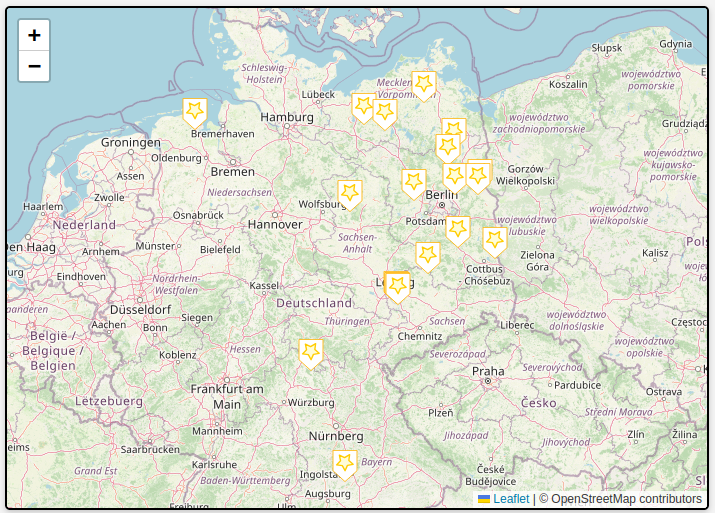
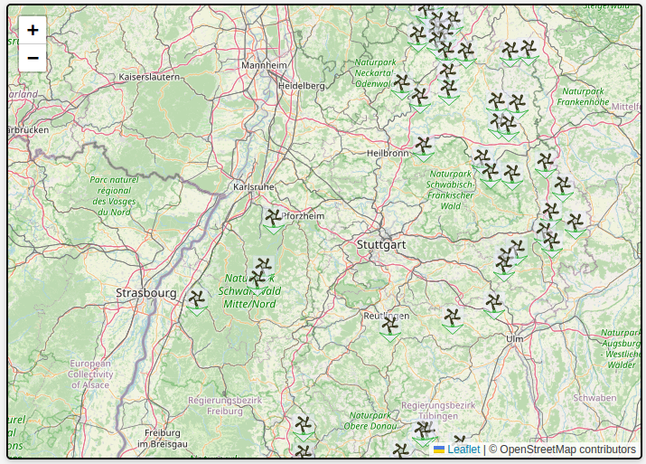
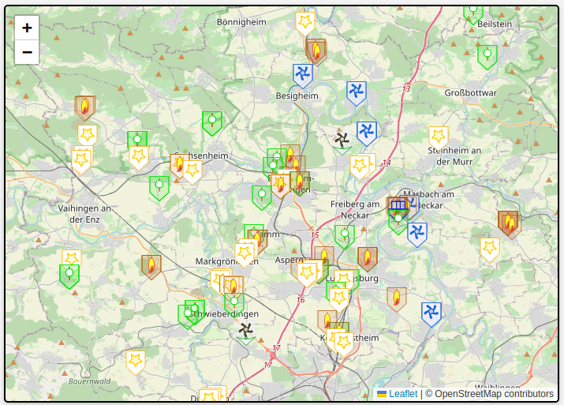
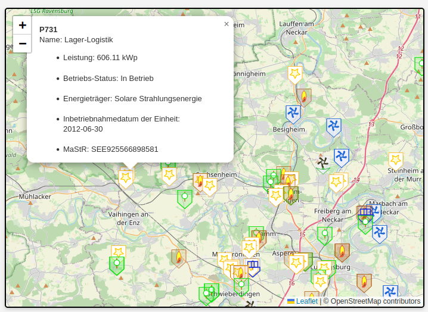

Stromerzeuger BRD PV >= 100kW (in der Fläche geclustert)

Stromerzeuger Baden-Würtemberg Wind >= 10kW (in der Fläche geclustert)

Alle Stromerzeuger >= 500kW im Landkreis Ludwigsburg

Alle Stromerzeuger >= 500kW im Landkreis Ludwigsburg (mit Erläuterungen einer Einheit)
